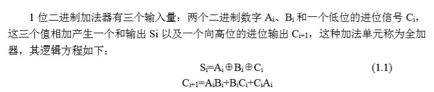
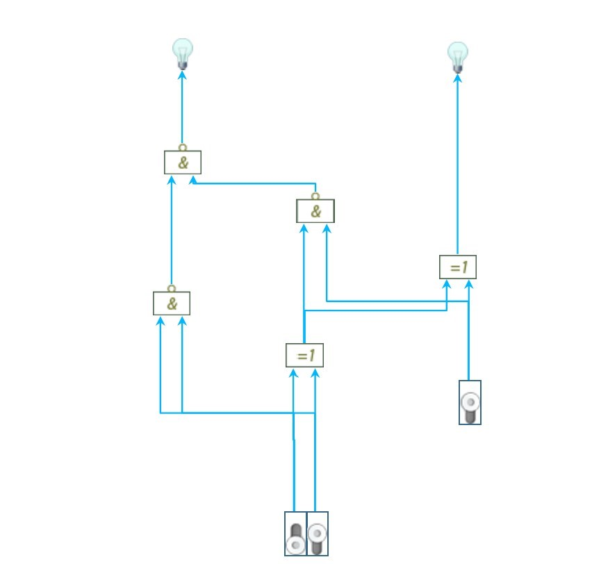
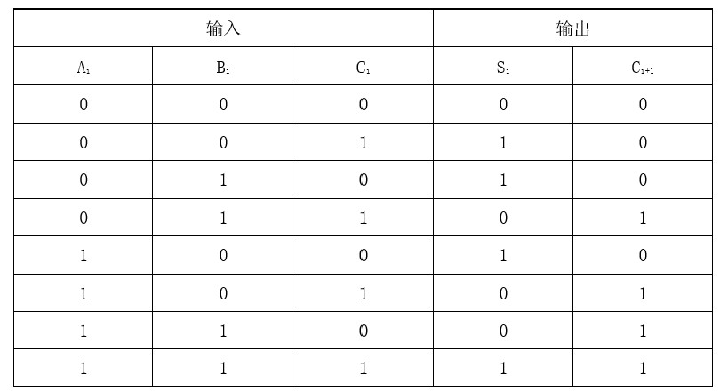
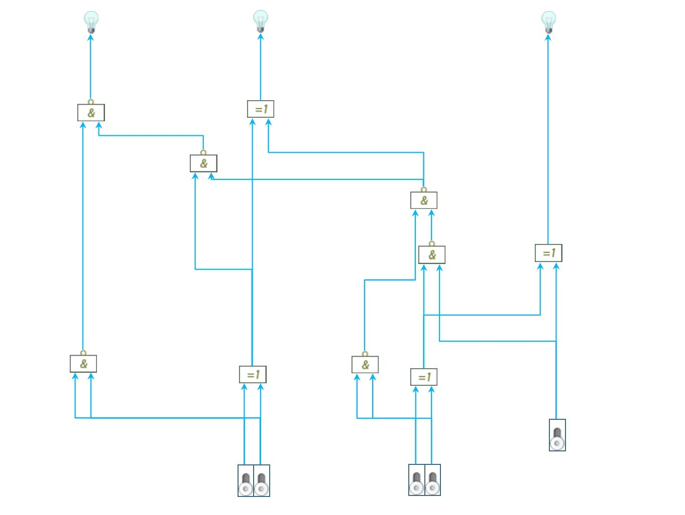
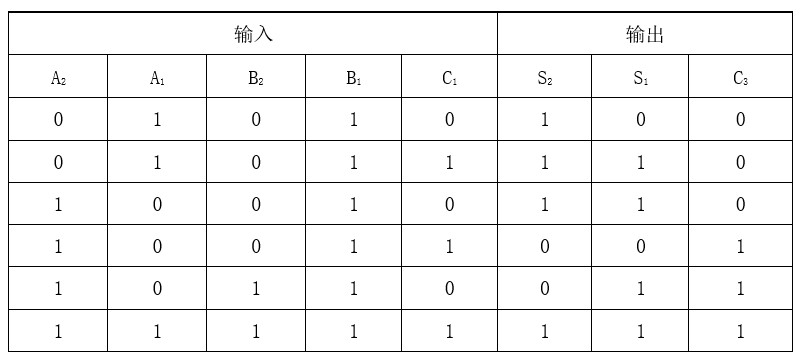

由于疫情原因这次课设是基于多思计算机组成原理网络虚拟实验系统实现的。
课程设计要求
1） 做好实验预习，复习全加器的原理，掌握实验元器件的功能特性。
2） 按照实验内容与步骤的要求，独立思考，认真仔细地完成实验。
3） 写出实验报告。
设计原理

实验步骤和内容
1、搭建实验电路
图1-1 一位全加器虚拟实验电路
2、打开电源开关，按表1-1中的输入信号设置数据开关，根据显示在指示灯上的运算结果填写表1-1中的输出值。
表1-1 一位全加器真值表
3、实现一个2位串行进位并行加法器
1）搭建实验电路
图1-2 两位全加器虚拟实验电路
2）用此加法器进行运算，根据运算结果填写表1-2。
表1-2 2位串行进位并行加法器真值表
总结
1、串行进位并行加法器的主要缺点是什么？有改进的方法吗？
答：主要缺点：高位的运算必须等到低位的进位产生才能进行，因此运算速度较慢。
改进方法：为了提高运算速度，可采用超前进位的方式，即每一位的进位根据各位的输入同时预先形成，与低位无关。例如：将C1的逻辑函数带入到C2， ，于是，这一位的进位输出就只取决于生成信号G0、G1，传输信号P0、P1，输入的进位信号C0，而这几个信号都是计算电路外部的已知信号，与低位计算无关。
2、能使用全加器构造出补码加法/减法器吗？
答：可以。因为计算机中加法和减法都是通过加法来实现的，数值一律用补码来存储，可以将符号位和数值位一起处理，并且减法也可按加法来处理，减去一个数相当于加上一个负数，负数用补码表示，符合两个补码数相加的原则。
欢迎交流~